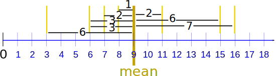
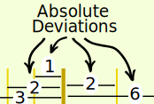

Mean Deviation
How far, on average, all values are from the middle.
Calculating It
Find the mean of all values ... use it to work out distances ... then find the mean of those distances!
In three steps:
- 1. Find the mean of all values
- 2. Find the distance of each value from that mean (subtract the mean from each value, ignore minus signs)
- 3. Then find the mean of those distances
Like this:
Example: the Mean Deviation of 3, 6, 6, 7, 8, 11, 15, 16
Step 1: Find the mean:
Mean = 3 + 6 + 6 + 7 + 8 + 11 + 15 + 168 = 728 = 9
Step 2: Find the distance of each value from that mean:
| Value | Distance from 9 |
|---|---|
| 3 | 6 |
| 6 | 3 |
| 6 | 3 |
| 7 | 2 |
| 8 | 1 |
| 11 | 2 |
| 15 | 6 |
| 16 | 7 |
Which looks like this:

(No minus signs!)
Step 3. Find the mean of those distances:
Mean Deviation = 6 + 3 + 3 + 2 + 1 + 2 + 6 + 78 = 308 = 3.75
So, the mean = 9, and the mean deviation = 3.75
It tells us how far, on average, all values are from the middle.
In that example the values are, on average, 3.75 away from the middle.
For deviation just think distance
Formula
The formula is:
Mean Deviation = Σ|x − μ|N
- Σ is Sigma, which means to sum up
- || (the vertical bars) mean Absolute Value, basically to ignore minus signs
- x is each value (such as 3 or 16)
- μ is the mean (in our example μ = 9)
- N is the number of values (in our example N = 8)
Let's look at those in more detail:
Absolute Deviation
Each distance we calculate is called an Absolute Deviation, because it is the Absolute Value of the deviation (how far from the mean).
|  | To show "Absolute Value" we put "|" marks either side like this: |-3| = 3 For any value x: Absolute Deviation = |x - μ| |
From our example, the value 16 has Absolute Deviation = |x - μ| = |16 - 9| = |7| = 7
And now let's add them all up ...
Sigma
The symbol for "Sum Up" is Σ (called Sigma Notation), so we have:
Sum of Absolute Deviations = Σ|x - μ|
Divide by how many values N and we have:
Mean Deviation = Σ|x − μ| N
Let's do our example again, using the proper symbols:
Example: the Mean Deviation of 3, 6, 6, 7, 8, 11, 15, 16
Step 1: Find the mean:
μ = 3 + 6 + 6 + 7 + 8 + 11 + 15 + 168 = 728 = 9
Step 2: Find the Absolute Deviations:
| x | |x - μ| |
|---|---|
| 3 | 6 |
| 6 | 3 |
| 6 | 3 |
| 7 | 2 |
| 8 | 1 |
| 11 | 2 |
| 15 | 6 |
| 16 | 7 |
| Σ|x - μ| = 30 |
Step 3. Find the Mean Deviation:
Mean Deviation = Σ|x - μ|N = 308 = 3.75
Note: the mean deviation is sometimes called the Mean Absolute Deviation (MAD) because it is the mean of the absolute deviations.
What Does It "Mean" ?
Mean Deviation tells us how far, on average, all values are from the middle.
Here is an example (using the same data as on the Standard Deviation page):
Example: You and your friends have just measured the heights of your dogs (in millimeters):

The heights (at the shoulders) are: 600mm, 470mm, 170mm, 430mm and 300mm.
Step 1: Find the mean:
μ = 600 + 470 + 170 + 430 + 3005 = 19705 = 394
Step 2: Find the Absolute Deviations:
| x | |x - μ| |
|---|---|
| 600 | 206 |
| 470 | 76 |
| 170 | 224 |
| 430 | 36 |
| 300 | 94 |
| Σ|x - μ| = 636 |
Step 3. Find the Mean Deviation:
Mean Deviation = Σ|x - μ|N = 6365 = 127.2
So, on average, the dogs' heights are 127.2 mm from the mean.
(Compare that with the Standard Deviation of 147 mm)
A Useful Check
The deviations on one side of the mean should equal the deviations on the other side.
From our first example:
Example: 3, 6, 6, 7, 8, 11, 15, 16
The deviations are:
| 6 + 3 + 3 + 2 + 1 | = | 2 + 6 + 7 |
| 15 | = | 15 |
Likewise:
Example: Dogs
Deviations left of mean: 224 + 94 = 318
Deviations right of mean: 206 + 76 + 36 = 318
If they are not equal ... you may have made a msitake!